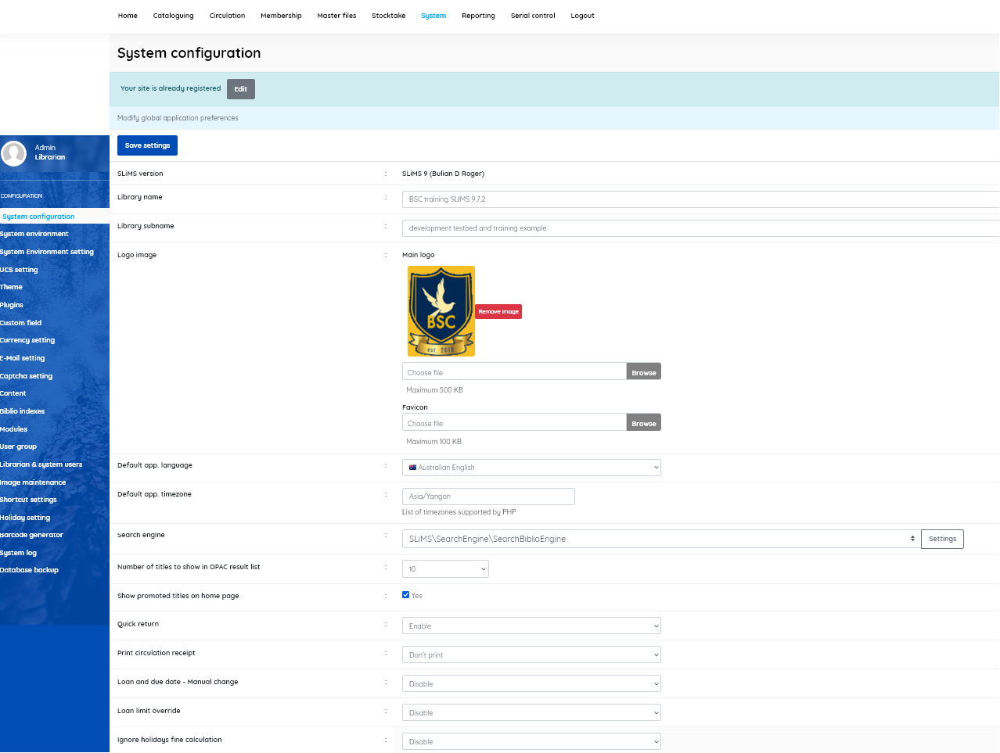

Using this form you can make changes to the global preferences in SLiMS applications, such as: - Library name (Name of library, appears in OPAC and printed items such as labels and cards) - Library sub-name (Additional library name, optional) - Logo image (Library logo image file, can be uploaded, may be used in OPAC and member cards) - Default application language (Language that Admin. modules are displayed in, and is OPAC default) - Default application timezone (These must be timezones supported by PHP) - Search engine (Choose search engine, and configure if allowed) - Number of titles to show in OPAC result list (Number of titles that will be displayed on every page in the OPAC) - Show promoted titles on homepage (Showing title of resource in the home page of the OPAC) - Quick return [Enable/Disable] (to allow the return of items via a quick method; default=Enable) - Print circulation receipt [Print/Don’t print] (default= Don’t print) - Loan and due date - Manual change [Enable/Disable] (default = Disable) - Loan limit override [Enable/Disable] (ability for staff to override limits; default=Disable) - Ignore holidays fine calculation [Enable/Disable] (whether to count holidays in calculating fines; default=Disable) - OPAC XML detail [Enable/Disable] (allow XML display of title detail; default=Enable) - OPAC XML result [Enable/Disable] (allow XML display of search results; default=Enable) - Enable SEARCH spellchecker [Enable/Disable] (default=Enable) - Allow OPAC file download [Allow/Forbid] (allow/forbid users to download title file attachments) - Session login timeout ( set time before a logged-in user is automatically logged out) - Remember me Timeout ( days before the “remember me” token will expire) - Barcode encoding [ Code 128/Code 38] (set the encoding system used for barcodes) - Visitor counter by IP [Enable/Disable] ( enabling will restrict which IP’s can access the visitor page) - Allowed counter IP ( allowed IP address for counter - default is 127.0.0.1) - Visitor limitation by time [Enable/Disable] - Time visitor limitation [in minutes] (limits visitor to set time, if limitation is enabled) - Reserve method [Database/Email]. ( default is Database ). Sets method for making reservations. - Reserve for item on loan only [Enable/Disable] ( allow reservation only for those items that are already loaned) - Activate confirm alert?[ [Enable/Disable] (default=Enable) - Ignore SSL verification [Enable/Disable] (Allow insecure http connection; default=Enable) - To make a simple search even simpler, narrowing the search criteria. [No/Yes] (default is No) - Strong password policy [Yes/No] (default is Yes. Enforces minimum password requirements) - Password minimum characters (if strong password policy is Yes) ( set number of characters, default = 8)
In this screen we can also see which version of SLiMS we are using.

Notes: Show promoted titles on homepage feature on this system: if the check box is checked, the front page of the OPAC display will not show titles, unless there is a set of bibliographic data to display on the front page. See the Add new entry menu in the Cataloguing module, and the setting “Promote to Homepage”
When you have altered the System configuration, be sure to click the Save settings button before exiting or changes will be lost.